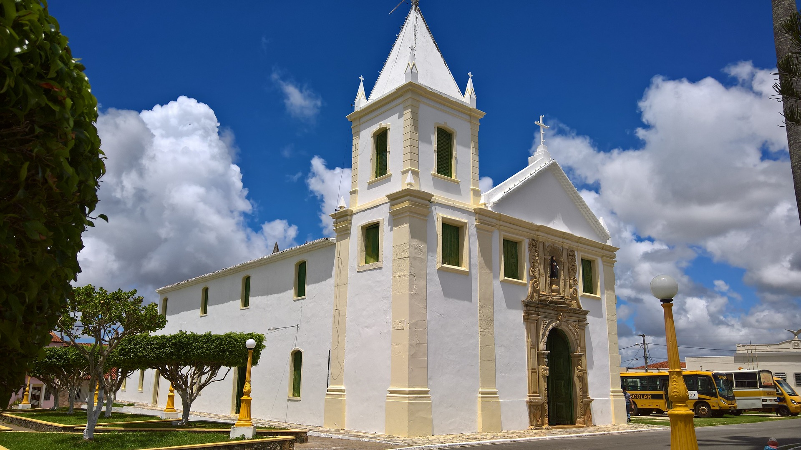

Telha
História
O pequeno município de Telha, a 107 quilômetros de Aracaju, localizado às margens do Rio São Francisco, tem aproveitado muito bem a ‘grandeza’ - hoje nem tão grande assim - de suas águas. O centenário cultivo de arroz na região ganhou a parceria da piscicultura, que em muitos lotes do Projeto Irrigado Propriá é produzida em consórcio com a rizicultura. Produtores telhenses já estão abastecendo de peixe, produzido em viveiros, o mercado de várias cidades de Sergipe e de Alagoas.
O município de Telha foi fundado em terras pertencentes a Propriá, doadas por Cristóvão de Barros, por volta de 1590, ao seu filho Antônio Cardoso de Barros. Duas famílias de holandeses se estabeleceram no local com uma fábrica de telhas de barro cozido, dando origem ao nome do Povoado Telha de Cima.
No início da década de 60, os moradores começaram a acreditar que a povoação já possuía condições suficientes de se emancipar de Propriá. Para viabilizar a emancipação, uma comissão, liderada por José Manoel Freire Filho - reconhecido o fundador do município - procurou o deputado Wolney Leal de Melo.
Ele apresentou um projeto de lei, que foi sancionado pelo então governador João de Seixas Dória, em 20 de janeiro de 1964. A partir dessa data foi criado oficialmente o município de Telha, através da lei nº 1.248, que dava a ele a responsabilidade de manter três povoados: São Thiago, São Pedro e Bela Vista. O primeiro prefeito, candidato único eleito pela Arena, foi Claudionor José dos Santos. O Projeto Irrigado Propriá (que engloba os municípios de Propriá, Telha e Cedro de São João), apesar do nome, tem a maioria dos produtores de Telha. Iniciou em 1975 apenas com a rizicultura, mas agora muitos dos 247 produtores estão trabalhando em consórcio com a piscicultura.
A Usina São João, instalada no município por José João do Nascimento Lima, recebe cerca de 90% da produção do arroz do município e beneficia o produto, que já sai empacotado para venda com o nome ‘Arroz Tia Graça’. O telhense Manoel da Silva (Manoel de Menezes), de 58 anos, possui seis viveiros de Tambaqui - um deles é o berçário - que comportam cinco mil peixes cada um. “A agricultura é uma faca de dois gumes. Uma hora a gente está de bolso cheio de dinheiro; outra hora cheio de contas pra pagar. A piscicultura tem um rendimento mais compensador, mas sempre há riscos, porque a gente alimenta uma coisa que está debaixo da água, que a gente não vê”, explica Manoel de Menezes.
Ele lembra com saudades do tempo das enchentes do Rio São Francisco, quando todos, sem distinção, podiam plantar arroz e sobreviver da pesca. “Agora só produz quem tem a terra irrigada. Mas as coisas de Deus nunca se acabam”, acredita ele. Seu Manoel conseguiu fazer os viveiros de peixe com um dinheiro (R$ 40 mil) que em 1997 ganhou na Roda da Fortuna, do Programa Silvio Santos. Além de investir na criação de peixes, comprou também um carro e uma casa. Ele foi representado no programa pelo seu filho Nivaldo Silva, 29, dono da primeira banda musical de Telha, a Nova Geração, que há um ano e meio vem animando as festas de padroeiros dos povoados da região.
fonte: https://cidades.ibge.gov.br/brasil/se/telha/historicoDados Gerais de acordo com o IBGE
| Prefeito (a) | Flavio Freire Dias |
| Vice-Prefeito (a) | Neudo Sérgio Freire |
| Site do município | https://telha.se.gov.br/ |
| Área territorial | 47,860 km² |
| População estimada | 3.271 pessoas |
| Densidade demográfica | 60,31 hab/km² |
| IDHM | 0,604 |
| PIB per capita | R$ 11.698,52 |